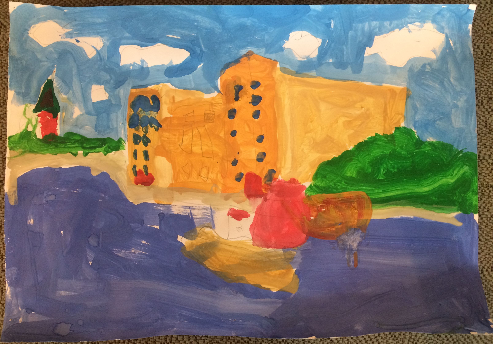
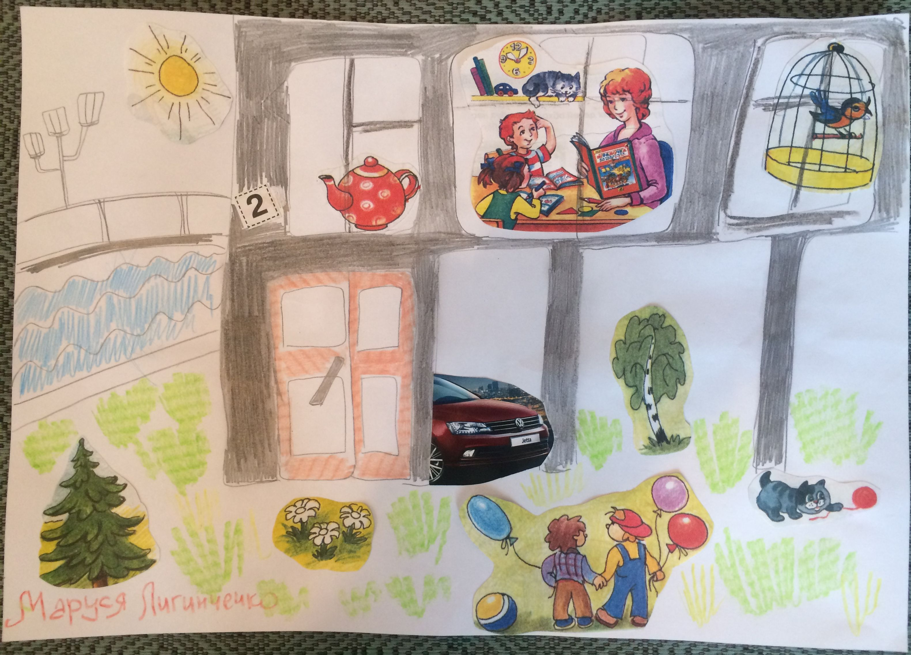

| Олимпиада для школьников Часы работы: вт, ср, пт 10:00—18:30 чт 11:00—21:00 сб, вс 11:00—18:00 Выходные дни: По понедельникам и в последнюю пятницу месяца Каждое 3-е воскресенье месяца бесплатное посещение. Экскурсионное обслуживание в эти дни платное расценки см. ниже Входные билеты: Подробнее Полный 100 руб. Льготный 50 руб. Бесплатный 0 руб. Экскурсионное обслуживание: Экскурсия длительностью 1 академ. час(45мин.) Стоимость экскурсионного обслуживания на одного человека - 200 руб. минимальная стоимость экскурсии - 600 руб. Входной билет приобретается дополнительно. На экскурсионное обслуживание льготы не распространяются |
Уважаемые посетители.
С октября 2017 г. у музея «Дом на набережной» заработал новый веб сайт http://dnnmuseum.ru/, на котором вы можете узнать информацию о музее, а также о проводимых мероприятиях.
Старая версия сайта расположена по ссылке http://ex.dnnmuseum.ru/
В воскресенье, 1 октября, музей "Дом на набережной" приглашает пенсионеров на бесплатные экскурсии, посвященные празднованию Международного дня пожилого человека.
Вход по предварительной записи. Время начала экскурсий: 12:00, 14:00, 16:00. Продолжительность 45 минут.
Запись на экскурсии по телефону: +7 (495) 959 49 36.
Отдел "Дом на набережной" объявил среди детей жителей Дома, конкурс на лучший рисунок и очерк о Доме.
Первое место разделили: Таисия Бородина и Маруся Лигинченко.
Мы благодарим участников и желаем им дальнейших творческих успехов.
 
Обращаем Ваше внимание!
17, 18, 19 июля 2017 года музей не работает в связи с проведением ремонтных работ
20 мая 2017 года (акция "Ночь в музее") музей работает с 10.00 до 24.00.
Вход бесплатный с 18.00 до 24.00. Посещение с 18.00 до 24.00 по предварительной записи!
В связи с тем, что помещение музея не позволяет находиться одновременно более 15 посетителям, доступ будет осуществляться по сеансам, по предварительной записи.
Тел: 8 495 959 49 36.
Программа мероприятий на 20.05.17 с 18:00 до 24:00
18:00 - обзорная экскурсия по дворам дома. (по погоде, по записи)
19:00 - посещение экспозиции ( по записи)
20:00 - посещение экспозиции ( по записи)
21:00 - концерт классической музыки. Исполнитель - виолончелистка Елена Скворцова(по записи)
22:00 - посещение экспозиции ( по записи)
23:00 - показ документального фильма "Дом на набережной" (по записи)
30 апреля 2017 года музей работает до 17:00.
1,8,9,21 мая 2017 года музей не работает.
Время работы музея в предпраздничные и праздничные дни:
30 декабря 2016 года - с 10.00 до 18.00.
31 декабря 2016 года - санитарный день.
1 января 2017 года - выходной день.
2 января 2017 года - с 11.00 до 18.00.
5 января 2017 года - с 11.00 до 19.30.
В остальные дни новогодних праздников музей работает по обычному расписанию.
Посещение бесплатное, экскурсии платные.
4 ноября 2016 года в мероприятии "Ночь искусств" музей работает в обычном режиме с 14.00 до 17.59; в режиме бесплатного посещения и экскурсионного обслуживания для всех категорий населения с 18.00 до 23.00.
В 14.00 - демонстрация художественного фильма "Долгое прощание", в 19.00 концерт классической музыки
1 октября 2016 года, в Международный день пожилого человека, в нашем музее будут проведены бесплатные экскурсии для пенсионеров, по предварительной записи.
Запись на экскурсии по телефону: 8-(495)-959-49-36.
Время начала экскурсий: 12:00, 14:00, 16:00.
Продолжительность 45 минут.
В августе и сентябре Музей предлагает экскурсию по дворам Дома.(если нет дождя)
На этой экскурсии вместо сомнительных рассказов самодеятельных экскурсоводов профессиональные экскурсоводы Музея «Дом на набережной» интересно и достоверно расскажут о жизни Дома и его обитателей.
Запись на экскурсию по тел: 8-(495)-959-49-36.
Время работы музея в Дни исторического и культурного наследия:
17 апреля - с 11.00 до 18.00,
21 мая - с 11.00 до 23.30.
Посещение музея и экскурсии СТРОГО по предварительной записи.
Темы экскурсий:
Во дворе дома - "История строительства Дома".
В помещении музея - "История СССР 20-30 х годов", " Жители Дома - государственные и партийные деятели СССР", "Быт Дома 30-х годов".
28 марта 2016 года в Центральном Доме Литераторов (Б. Никитская, д. 53) в состоялся вечер памяти Ю.В. Трифонова.
Дорогие жители и гости столицы!
Музей «Дом на набережной» ( отдел Музея Москвы)
Приглашает вас на экскурсию, посвященную деятелям Республик СССР.
Вас ждет интересный рассказ о руководителях Республик Средней Азии и
Европейской части СССР, об их, зачастую, трагических судьбах.
Ждем вас !
30 июля 2015 года состоялось открытие выставки и вечер памяти Ю.В. Трифонова в Музее Москвы.
В дни весенних школьных каникул (21-29 марта 2015 года) в музее были проведены следующие мероприятия:
21 марта и 26 марта нтерактивная экскурсия "Молодежь дома - участники ВОВ".
24 марта интерактивная экскурсия "Писатели "Дома на набережной".
26 марта встреча с участниками "Олимпиады".
19 декабря 2014 года в 19.00 в "Музее Москвы" (Зубовский бульвар, д.2) состоялось открытие выставки посвященной 20-летию музея "Дом на набережной".
Вышла книга-альбом "Москва Юрия Трифонова",автор О.Р. Трифонова, Издательство "Галерия" (приобрести можно в музее).
Музей выражает благодарность г-ну Эрманну (Германия) за благотворительное пожертвование
27 марта 2011 года в музее прошла очередная встреча "Столетия-2010", посвященная жителям дома 1910 года рождения
В ноябре 2009 года музею "Дом на набережной" исполнилось 20 лет.
Вышла из печати книга: Т.И. Шмидт "Дом на набережной. Люди и судьбы", Москва, Издательство "Возвращение", 2009. В книге рассказывается о политических репрессиях в московском Доме Правительства ("Доме на набережной").
При поддержке Префектуры и Управления культуры ЦАО г. Москвы отпечатан альбом «Дом на набережной», Москва, 2005 г., изд-во «Совершенно секретно». Автор-составитель О.Р. Трифонова; работа с архивами и подбор материалов – И.Н. Лобанова, Т.И. Шмидт; фотографии из собрания А.А. Задикяна.
Мы собираем материал о 19-й школе им.Белинского на Софийской набережной, где учились многие дети из Дома на Набережной. В марте 2003 г. прошла встреча выпускников 1935-45 гг. (в 1935 г. был первый десятилетний выпуск). Теперь мы готовим следующие встречи и, возможно, публикации. Откликнитесь, выпускники 1946-го и последующих годов! Мы ждем вас с воспоминаниями и фотографиями школьных лет.
Альбом "ДОМ НА НАБЕРЕЖНОЙ"
Проезд троллейбусами 1, 4, 33, 62 до остановки «Кинотеатр “Ударник”» (станции метро «Кропоткинская», «Октябрьская», «Полянка»).
Рекомендуем в будние дни ехать до станции «Кропоткинская», выход к Храму, далее 2 остановки троллейбусами 1 или 33
либо пешком через пешеходный мост через Москву-реку.
По Берсеневской набережной пройти Театр эстрады, войти во двор через арку и слева, пройдя подъезд № 1, найти наше крылечко.
вход справа от первого подъезда.
Почтовый адрес: Москва 119072, ул. Серафимовича,
Государственный краеведческий музей "Дом на Набережной",
телефон /факс: 8 (495) 959-49-36.
Дизайн: Зоркин Василий.
museumdom@yandex.ru
Новый сайт dnnmuseum.ru